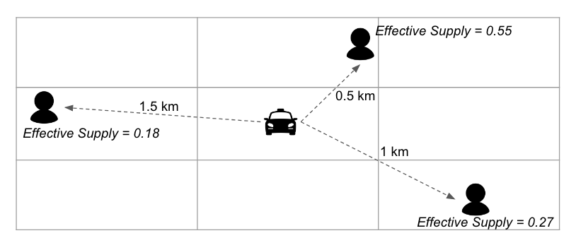
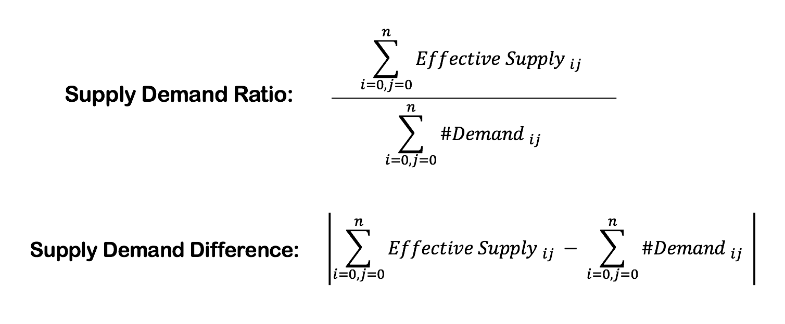
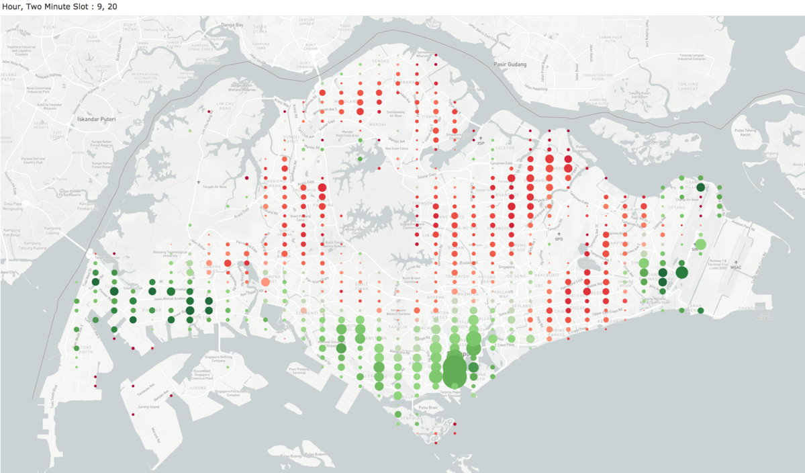
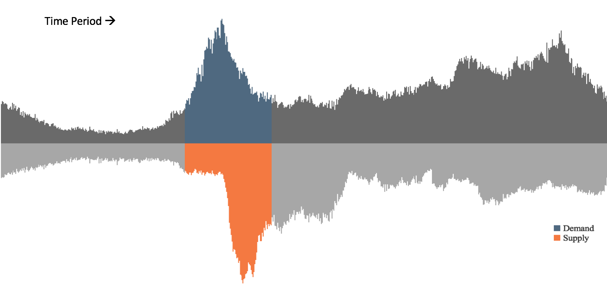
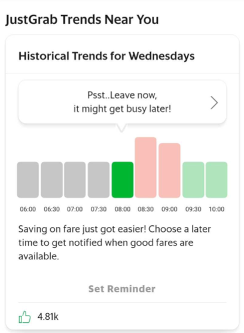

Understanding Supply & Demand in Ride-hailing Through the Lens of Data
The #1 Goal in Ride-Hailing: Allocation
Grab’s ride-hailing business in its simplest form is about matchmaking Passengers looking for a comfortable mode of transport and Drivers looking for a flexible earning opportunity.
Over the last 6 years, Grab has repeatedly fine-tuned its machine learning algorithms with the goal of ensuring that passengers get a ride when they want it, and that they are matched to the drivers that are closest to them.
But drivers are constantly on the move, and at any one point there could be hundreds of passengers requesting a ride within the same area. This means that sometimes, the closest available drivers might still be too far away.
The Analytics team at Grab attempts to analyze these instances at scale via clearly-defined metrics. We study the gaps so that we can identify potential product and operational solutions that may guide supply and demand towards geo-temporal alignment and better experience.
In this article, we give you a glimpse of one of our analytics initiatives - to measure the supply and demand ratio at any given area and time.
Defining Supply and Demand
A single unit of Supply is considered as a driver who is Online and Idle (not currently on a job) at the beginning of an x seconds slot, where x is a miniscule unit of time. The driver’s GPS ping at the beginning of this x seconds slot is considered to be his or her location.
A single unit of Demand is considered as a passenger who is checking fares for a ride via our app within the same x seconds slot. We consider the passenger’s location to be the pick up address entered.
Mapping Supply and Demand
For the purpose of analysis, each location is aggregated to a geohash (a geographic location encoded into a string of letters and digits) with a precision of y where y refers to a very small polygon space of dimensions on the map. Each unit of Supply is then mapped to all units of Demand within the supply’s neighbouring geohashes as displayed in Figure 1.

Figure 1: Illustration depicting a supply unit distributed among the demand units in its neighbouring geohashes
A fraction of each unit of Supply is assigned to each unit of Demand in the neighbouring geohashes inversely weighted by Distance. Essentially, this means that a driver is more available to nearer passengers compared to further ones.
To keep things simple for this article, we have used Straight Line Distance instead of Route Distance as a proxy to reduce the complexity of the algorithms.
Summation of fractions of available drivers for each passenger would give the effective supply for each passenger. This is depicted in figure 1 where each passenger shares a small fraction of the supply.
For this analysis, we have aggregated demand and effective supply for every geohash i and a time slot j combination, resulting in two simple aggregated metrics: Supply Demand Ratio and Supply Demand Difference (Figure 2).

Figure 2: The metrics aggregated for any area and time slot
Processing the Data
While the resulting metrics may look like a simple ratio and difference, calculating effective supply, which requires mapping every driver and passenger in neighbouring space, is a considerably heavy computation.
Across the region, there could be hundreds of thousands of passengers looking for a ride at any given point in time. Our algorithms not only identify each Demand and Supply unit and its location, but also maps every Supply unit to all the Demand units in the same neighbourhood to output the fractional supply available to each passenger.
Simply put, the complexity can be summarised as the following: Every extra Supply or Demand unit exponentially increases the algorithm’s computation power.
This is just one of many high-computation problems that the Analytics team handles on a daily basis. So the problem solving doesn’t necessarily end with developing a network-representative algorithm or metric, but to be able to make it performant and usable, even as the business scales.
Visualizing the Metrics on a Map
With the metrics we discussed above, we can map out how gaps between demand and supply can evolve throughout the day. The GIF below displays Singapore’s supply demand gap on a typical day.

Each bubble indicates a miniscule area on the map. The size of each bubble indicates the Supply Demand difference in that area - the bigger the bubble, the bigger the gap. We’ve also colored the bubbles to indicate the Supply Demand Ratio where Red signifies Undersupplied and Green signifies Oversupplied.
To meet our goals of ensuring that passengers can always find a ride whenever they want it, we need to balance demand and supply. At Grab, we do this in many ways, including on one hand - finding ways to move oversupply to areas where there is higher demand, and on the other - shifting less time-sensitive demand away from peak time-slots.
Identifying Spatial Opportunities to Position Supply

Figure 3: Supply Demand Distribution in Singapore on a typical weekday
At any given time of the day, there may be an oversupply of drivers in one area while there is undersupply in others.
As shown in Figure 3, this is common in Singapore after morning peak hours when most rides end in CBD which results in an oversupply in the area. Such scenarios are also common at queueing spots such as Changi Airport.
To address this geo-temporal misalignment, Grab recently updated the Heatmap on the Grab Driver app to encourage drivers to move away from oversupplied areas to areas where there is higher demand.
Identifying Temporal Opportunities to move Demand

Figure 4: Typical Supply Demand Distribution in a small residential area in Singapore across the day.
Figure 4 is an aggregated representation of supply and demand on a typical weekday in a small residential area in Singapore.
The highlighted region in Figure 4 depicts a time period when demand and supply are mismatched. Based on historical data, we know that demand can peak due to various factors both expected (usual peak hours) and unexpected (sudden heavy rain). However, supply amplifies at a delayed time period, usually when the demand is already subsiding.

Figure 5: Travel Trends Widget on the Passenger App showing best times to book in River Valley (Singapore)
To address this imbalance, Grab recently launched a Travel Trends Widget (Figure 5) on the passenger app to let our riders know of the predicted demand distribution across hours.
This widget shows you demand trends, based on the summation of historical data for a passenger’s specific location. The goal here is to encourage time-insensitive demand (passengers who don’t need a ride immediately) to book slightly later, helping passengers with more urgent needs to get allocated with higher ease.
As testimony to its usefulness, the Travel Trends Widget is now ranked #1 among all of Grab’s widgets! With the highest number of click-throughs, we have observed that hundreds of thousands of people are finding it useful for their daily use! Watch out for the next upgraded version as we continue to improve it to be more contextual and smart!
Stay tuned for more!
Given the continuously-changing reality where there is a constantly-fluctuating supply and demand, Grab’s Transportation team’s ultimate goal boils down to just one thing: to ensure that our passengers can get a ride when and where they need it, as fast and easy as possible; while providing our drivers better livelihood, through rewarding experience.
To get this right - balancing demand and supply is crucial. There are many ways we do it. We have shared a couple in this piece, but another important element is dynamic pricing - where fares respond to shifts in supply and demand.
We’ll be taking a closer look at this topic in another article. So stay tuned!
Interested? Join us!
Grab’s Analytics team provides integral support to all of Grab’s services and products.
This is only a glimpse of the Analytics team’s efforts to deeply understand our data, use it to evaluate the platform’s performance and continuously iterate to build better data driven products.
If you are interested in solving problems like this, join us! We are hiring! Visit our career website to check out the openings!
Acknowledgement:
We would like to thank the many contributors to the work mentioned above: Ashwin Madelil (Product Manager), Shrey Jain (Product Manager), Brahmasta Adipradana (Product Manager), Prashant Kumar (Product Manager), and Ajmal Jamal (Designer).